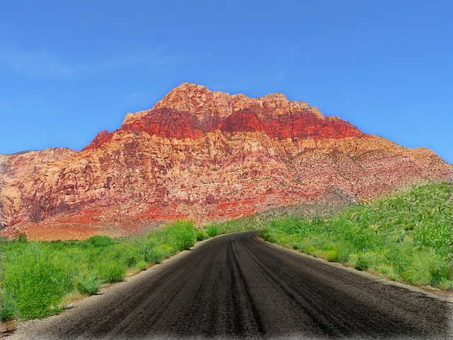

Now that there is the Tec-9, a crappy spray gun from South Miami. This gun is advertised ***HERE WE GO the most popular gun in American crime. Do you believe that shit? It actually says that in the little book that comes with it: the most popular gun in American crime. Like they're actually proud of that shit. Look, just because I don't be givin' no man a foot massage don't make it right for Marsellus to throw Antwone into a glass motherfuckin' house, fuckin' up the way the nigger talks. Motherfucker do that shit to me, he better paralyze my ass, 'cause I'll kill the motherfucker, know what I'm sayin'? The path of the righteous man is beset on all sides by the iniquities of the selfish and the tyranny of evil men. Blessed is he who, in the name of charity and good will, shepherds the weak through the valley of darkness, for he is truly his brother's keeper and the finder of lost children. And I will strike down upon thee with great vengeance and furious anger those who would attempt to poison and destroy My brothers. And you will know My name is the Lord when I lay My vengeance upon thee. Now that there is the Tec-9, a crappy spray gun from South Miami. This gun is advertised as the most popular gun in American crime. Do you believe that shit? It actually says that in the little book that comes with it: the most popular gun in American crime. Like they're actually proud of that shit. Look, just because I don't be givin' no man a foot massage don't make it right for Marsellus to throw Antwone into a glass motherfuckin' house, fuckin' up the way the nigger talks. Motherfucker do that shit to me, he better paralyze my ass, 'cause I'll kill the motherfucker, know what I'm sayin'? The path of the righteous man is beset on all sides by the iniquities of the selfish and the tyranny of evil men. Blessed is he who, in the name of charity and good will, shepherds the weak through the valley of darkness, for he is truly his brother's keeper and the finder of lost children. And I will strike down upon thee with great vengeance and furious anger those who would attempt to poison and destroy My brothers. And you will know My name is the Lord when I lay My vengeance upon thee.